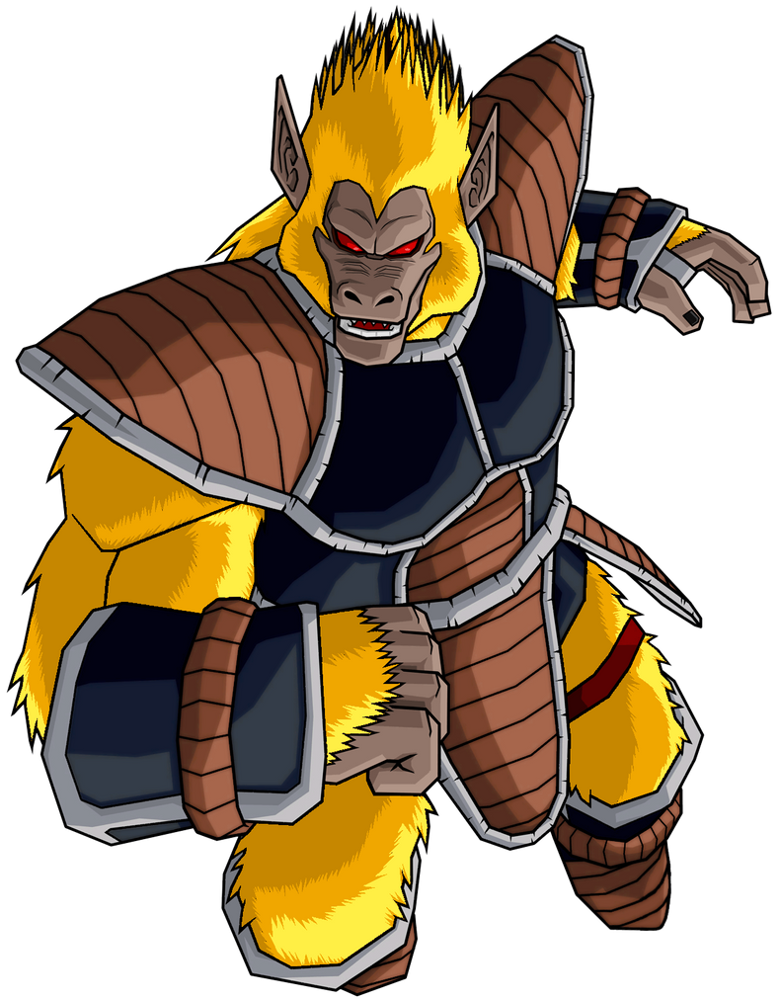
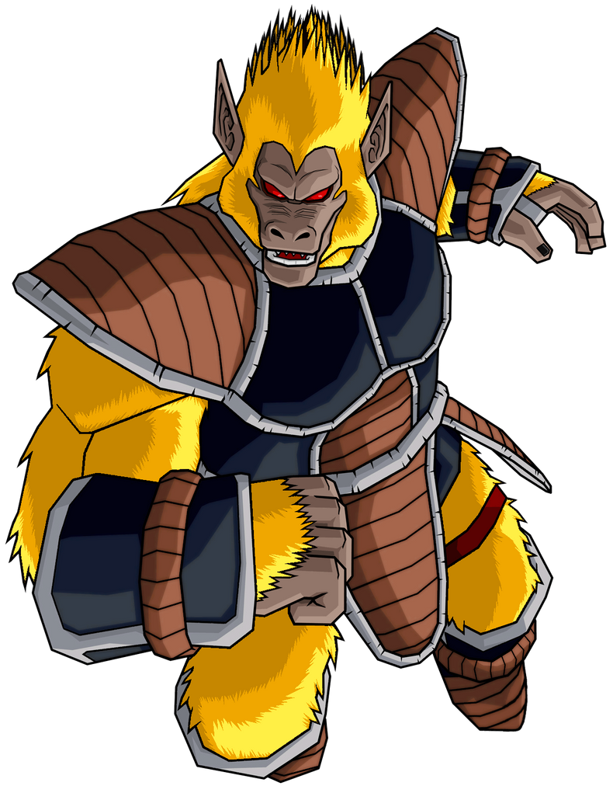
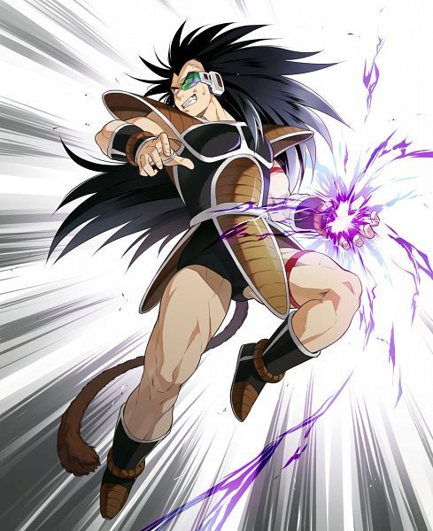
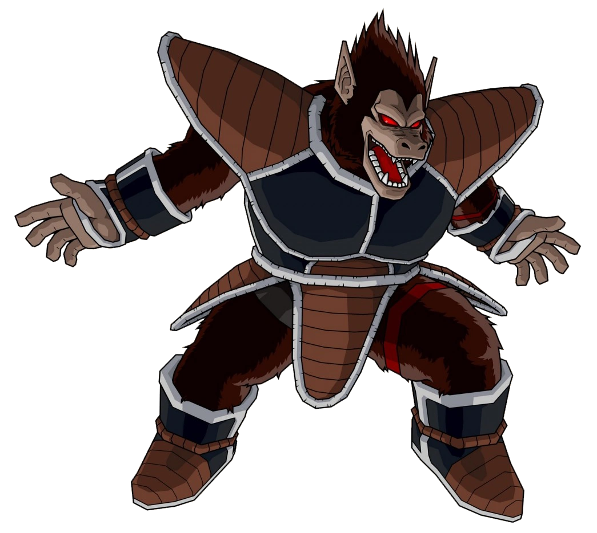

 congratulations by Dodoria, Zarbon, and Frieza. While Raditz is visibly hurt and angered at this, Nappa loses control and tries to attack Frieza, Zarbon, and Dodoria, but congratulations by Dodoria, Zarbon, and Frieza. While Raditz is visibly hurt and angered at this, Nappa loses control and tries to attack Frieza, Zarbon, and Dodoria, but congratulations by Dodoria, Zarbon, and Frieza. While Raditz is visibly hurt and angered at this, Nappa loses control and tries to attack Frieza, Zarbon, and Dodoria, but congratulations by Dodoria, Zarbon, and Frieza. While Raditz is visibly hurt and angered at this, Nappa loses control and tries to attack Frieza, Zarbon, and Dodoria, but congratulations by Dodoria, Zarbon, and Frieza. While Raditz is visibly hurt and angered at this, Nappa loses control and tries to attack Frieza, Zarbon, and Dodoria, but congratulations by Dodoria, Zarbon, and Frieza. While Raditz is visibly hurt and angered at this, Nappa loses control and tries to attack Frieza, Zarbon, and Dodoria, but congratulations by Dodoria, Zarbon, and Frieza. While Raditz is visibly hurt and angered at this, Nappa loses control and tries to attack Frieza, Zarbon, and Dodoria, but
Raditz
- Double sunday
- Super speed
- Catch
Raditz (SSJ)
- Dgaf
- Instant vaporize
- Justice
Raditz (SSJ2)
- Ultimate double Sunday
- Double forget you
- Monday balls
Raditz (SSJ3)
- Earth shatter
- Thursday throw
- Yellow monster
Raditz (SSJ4)
- Red Friday
- Poop throw
- Red monster
Raditz (U.I.)
- Forget Kakarot
- Forget Vegeta
- Infinite forget you
Raditz was born to Bardock and Gine sometime before Age 736. Raditz was born with a power level
high enough to become an upper-level warrior and was assigned to the
same group as Nappa, later Vegeta was added to the group too.[7] During the time of Planet Vegeta's
destruction, as a child at the time, Raditz was away on a mission with
Prince Vegeta and was spared the fate of many of his race, including his mother and father, thanks to Vegeta
deciding that they will ignore the order to return to Planet
Vegeta.[3] Sometime before the destruction of Planet Vegeta, Raditz is told by his father what happened to
his brother.[8] In an anime only flashback in the Frieza Saga,
sometime after the genocide of the Saiyans, Raditz along with Nappa and Vegeta return from their conquest on
planet Shikk.
"Forget humans Kakarot"